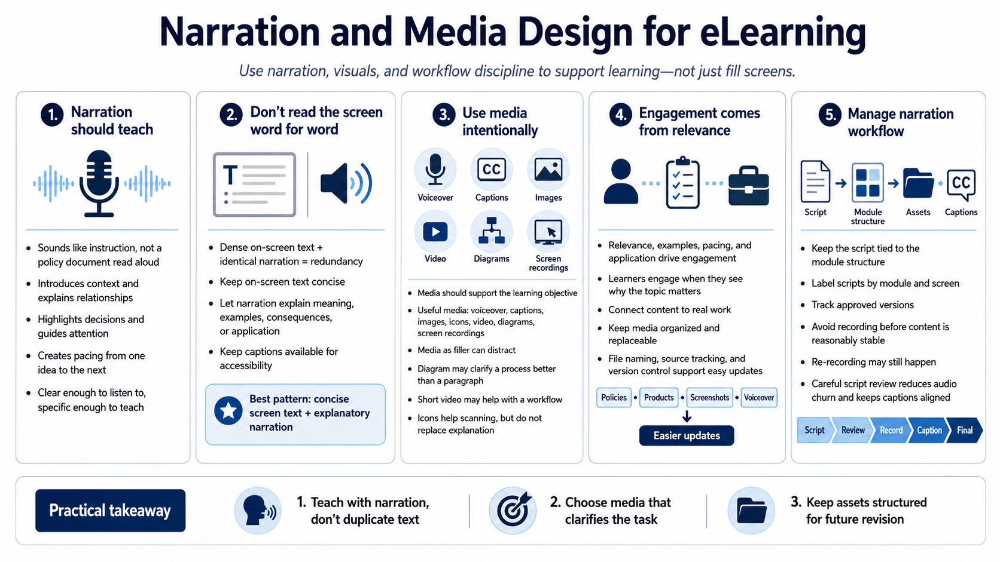

Narration, Media, and Learner Engagement
Connecting to LMS... Progress: in progress

Narration
Narration should sound like instruction, not like a policy document being read aloud. Good narration introduces context, explains relationships, highlights decisions, and guides attention. It can also create pacing by moving learners from one idea to the next. The script should be clear enough to listen to, but specific enough to teach something useful.
Avoid simply duplicating dense on-screen text word for word. When learners hear the same text they are trying to read, the experience can feel redundant and mentally crowded. A better pattern is to keep on-screen text concise and let narration explain the meaning, example, consequence, or practical application. Captions should remain available so learners can access the spoken content.
Media should be intentional. Voiceover, captions, images, icons, video, diagrams, and screen recordings can all improve learning when they support the objective. They can also distract when used as filler. A diagram may clarify a process better than a paragraph. A short video may help with a workflow. An icon may help scanning, but it should not replace needed explanation.
Learner engagement comes from relevance, examples, pacing, and application more than gimmicks. A course feels engaging when learners see why the topic matters and can connect it to real work. Keep media organized and replaceable. File naming, source tracking, and version control at a practical level make future updates easier when policies, products, screenshots, or voiceover need to change.
For narration workflows, keep the script connected to the module structure. Label scripts by module and screen, track approved versions, and avoid recording before the content is reasonably stable. Re-recording is sometimes necessary, but disciplined script review prevents unnecessary audio churn and helps captions stay aligned with the final spoken message.